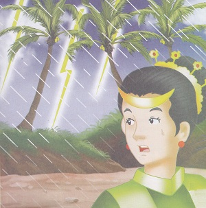
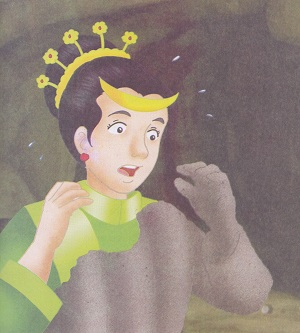
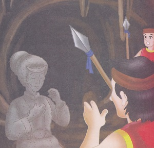
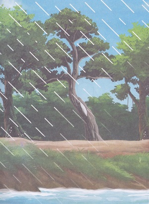

Putri Pukes
( Cerita Rakyat Aceh )
Di dataran tanah Gayo, Aceh, Sumatera Utara, hiduplah seorang putri raja bernama Putri Pukes. Sang Putri menyukai seorang pangeran dari kerajaan lain. Awalnya, kedua orangtuanya tidak merestui karena negeri tempat tinggal pangeran itu jauh. Namun, karena kegigihan Putri Pukes dan sang Pangeran, orangtua sang Putri pun merestui dan menikahkan mereka.
Setelah menikah, tibalah saatnya Putri Pukes menyusul suaminya. Ia pun pamit kepada orangtuanya untuk pergi ke kerajaan suaminya. Orangtua Putri Pukes sangat bersedih, tetap mereka harus melepas anaknya itu pergi.
"Pergilah, Nak, bersama para pengawal. Tapi, satu hal yang harus kau jaga, begitu melangkahkan kaki keluar dari kerajaan ini, sekali pun janganlah menoleh lagi ke belakang...," pesan orangtuanya.
Putri Pukes pun berangkat bersama para pengawal. Di tengah jalan, ia selalu teringat akan orangtuanya dan sangat merindukan mereka. Karena ia terlalu bersedih, tanpa sengaja, ia menoleh ke belakang. Tiba-tiba, datanglah petir menyambar dan hujan yang sangat lebat. Putri Pukes dan rombongannya segera berteduh di dalam sebuah goa.
Di dalam goa, Putri Pukes berdiri di sudut untuk menghangatkan tubuhnya yang kedinginan. Perlahan-lahan, sang Putri merasa tubuhnya mengeras. Putri Pukes sangat terkejut dan menangis. Ternyata, tubuhnya berubah menjadi batu. Putri Pukes menyesal, karena tidak mengindahkan pesan orangtunya. Seharusnya, ia tidak menoleh ke belakang selama dalam perjalanan.
Setelah merasa cukup lama beristirahat dan hujan mulai reda, mereka berniat melanjutkan perjalanan. Para pengawal pun memanggil sang Putri. Berkali-lkali mereka memanggil, tetapi tetap tidak terdengar jawaban. Para pengawal pun menghampiri tempat Putri Pukes berdiri. Mereka terus memanggil, tetapi sang Putri hanya diam. Saat melihat dengan jelas, para pengawal sangat terkejut melihat tubuh Putri Pukes telah mengeras dan menjadi batu. 
Sementara itu, karena hujan yang sangat lebat, terbentuklah danau di kawasan itu. Penduduk sekitar menamakan danau itu dengan Danau Laut Tawar.
Sampai sekarang, batu Putri Pukes masih bisa dilihat. Bentuknya membesar di bagian bawah, tetap bentuk sanggul dan kepala sang Putri masih bisa dikenali. Menurut cerita rakyat Indonesia yang diyakini oleh penduduk setempat, batu tersebut membesar di bagian bawah, karena Putri Pukes terus menangis. Sehingga air matanya menumpuk di bawah.